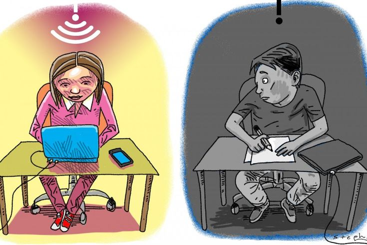

| HOME | ANALYSIS & INTERPRETATION | FINDINGS & RECOMMENDATIONS |

Research collected in Phase 1 showed that online education offers flexibility and access to a wide range of educational resources. Learners can access recorded lessons, study notes and assessments from various locations.
However, online education relies heavily on stable internet access, suitable devices and learner self-discipline. These factors significantly influence the effectiveness of online learning.
Survey results from Phase 2 confirmed that learners appreciate the convenience and flexibility of online learning. At the same time, many reported difficulties related to internet connectivity, data costs and reduced interaction with teachers and peers.
| Advantages | Challenges |
|---|---|
| Flexible learning schedules | Connectivity issues |
| Access to resources anywhere | High data costs |
| Self-paced learning | Limited device access |
| Recorded lessons | Reduced social interaction |
| Academic continuity | Motivation difficulties |
| Factor | Online Education | Traditional Education |
|---|---|---|
| Flexibility | High | Limited |
| Technology Required | Yes | No |
| Face-to-Face Interaction | Limited | High |
| Access to Resources | Extensive | Classroom Based |
| INSERT GRAPH 1 HERE |
| INSERT GRAPH 2 HERE |
Grade 12 CAT PAT 2026